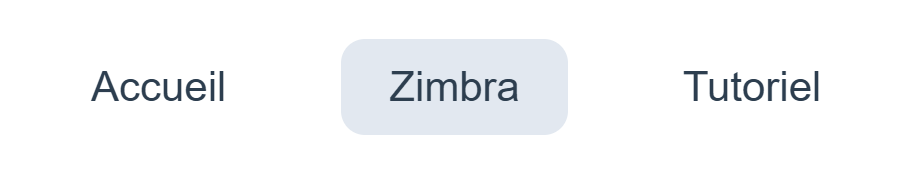
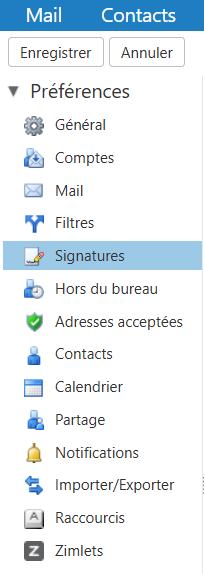
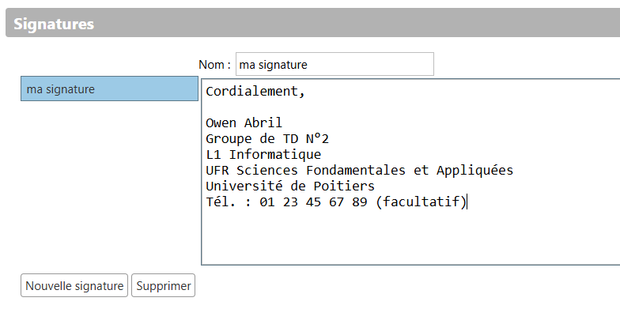
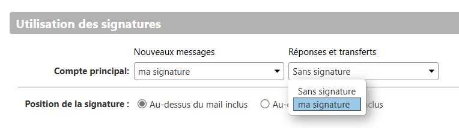
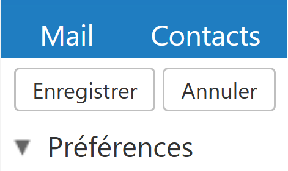

Voici votre signature générée :
Le texte a été copié !
Ajouter une signature à vos e-mails dans Zimbra
Tutoriel complet ici :
1 - Cliquez sur Zimbra sur cette page Web.

2 - Connectez-vous avec votre identifiant et votre mot de passe.
3 - Dans la partie du haut du site, cliquez sur "Préférences".

4 - Ensuite, à gauche, allez dans "Signatures".

5 - Donnez un nom de signature, puis collez votre signature générée.

6 - Dans Utilisation des signatures, sélectionnez votre signature pour les 2 catégories.
Pour la position de la signature, séléctionnez "Au-dessus du mail inclus".

7 - N'oubliez pas d'enregistrer votre signature.

Consultez les infos complémentaires :